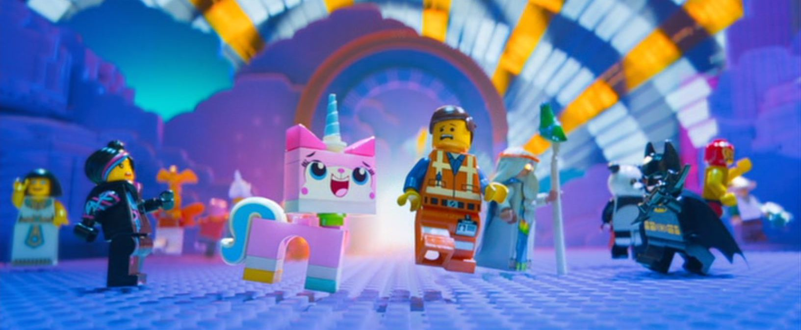

About Princess UniKitty!
Unicorn-horned cat and Master Builder who is the ruler of the secret sky location called Cloud Cuckoo Land, where there are no rules or unhappy things. She is cute, positive, and optimistic, but also has a dark side when she gets angry.
Princess Unikitty! and her frineds from The Lego Movie.
Princess UniKitty! Characteristics
- She will lose it with those who do not remain positive or creative.
- She ruled Cloud Cuckoo Land before it was destroyed.
- Unikitty has many forms, such as Angry kitty, Super Angry kitty, Queasy kitty, Sitting unikitty, Disco kitty, Ultrakatty, Warrior kitty, Astro kitty, and "Biznis" Kitty.
Princess UniKittys! Friends
Unikitty will do anything to protect her kingdom and friends are safe and make sure every day goes perfectly and is, most importantly, fun.